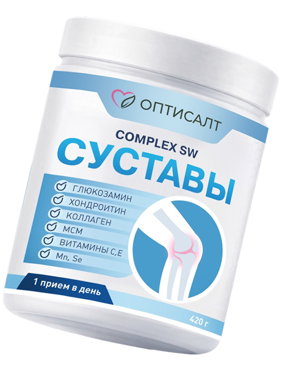
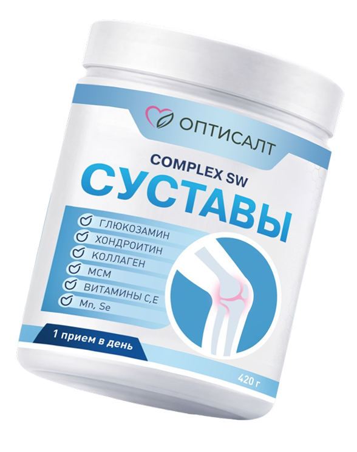
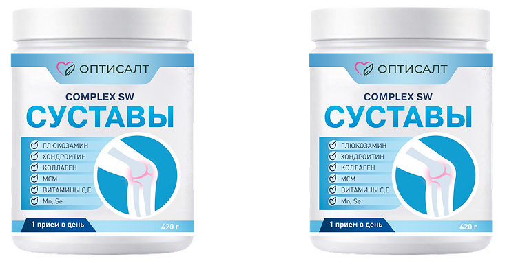

Питание суставов
Полноценный рацион для ваших суставов. Ежедневно снабжаем хрящевую ткань важными витаминами и микроэлементами, необходимыми для поддержания ее структуры и функций.
Комплексная поддержка суставов
«Complex SW СУСТАВЫ» порошок для опорно-двигательного аппарата. 420 г. / 30 порций. Месячный курс.

Комплекс для ежедневной нутритивной поддержки суставов и естественного обновления хрящевой ткани, помогающий сохранять подвижность и комфорт при активном образе жизни.
Представьте, что вы каждый день даете своим суставам «витамин бодрости», который помогает им оставаться гибкими и здоровыми.
Оставить заявку
БАД «Complex SW СУСТАВЫ» от Оптисалт решает три главные задачи здоровья суставов
Полноценный рацион для ваших суставов. Ежедневно снабжаем хрящевую ткань важными витаминами и микроэлементами, необходимыми для поддержания ее структуры и функций.
Запуск собственных механизмов организма по восстановлению хряща, а не просто временное маскирование проблемы. Стимулируем внутренние ресурсы организма для восстановления хрящевой ткани, способствуя ее здоровью изнутри.
Сохраняем комфорт в любом движении. Благодаря комплексной поддержке вы дольше остаетесь активными, забываете о скованности и с легкостью занимаетесь любимыми делами.
Витамины и микроэлементы, традиционно используемые для поддержки хрящевой ткани и суставов. Являются их элементами и участвуют в их метаболизме. Представлено в эффективной дозировке.
Мы объединили нутритивную защиту и стимуляцию регенерации хряща. Это комплексный подход к здоровью суставов: питание + обновление = ваша уверенная подвижность и комфорт при любом уровне активности.
Высокие дозировки глюкозамина и хондроитина дополняются противовоспалительной босвеллией и витаминами.

«Complex SW СУСТАВЫ» — это комплексная добавка, сочетающая высокие дозировки глюкозамина и хондроитина с противовоспалительной босвеллией и полным набором витаминов для защиты соединительной ткани.
В отличие от многих стандартных средств на рынке, он предлагает законченную систему «все в одной порции».
Ключевым преимуществом является наличие клинически значимых дозировок (например, 1250 мг глюкозамина), тогда как многие на рынке используют уменьшенные дозировки ради экономии.
Мы на связи ежедневно. Подскажем по составу, применению и доставке.